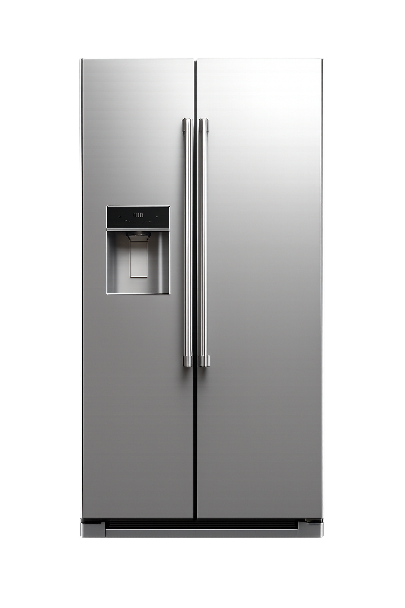
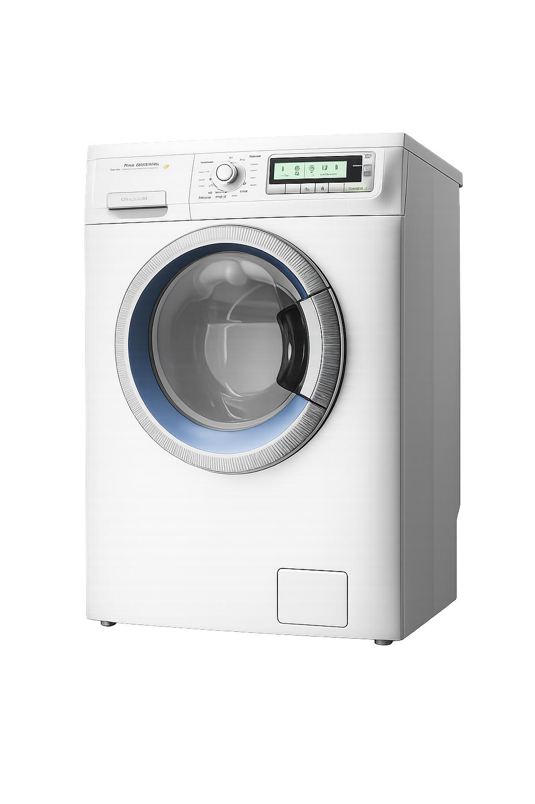
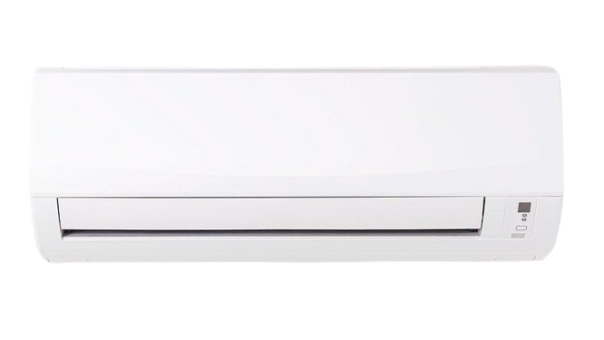
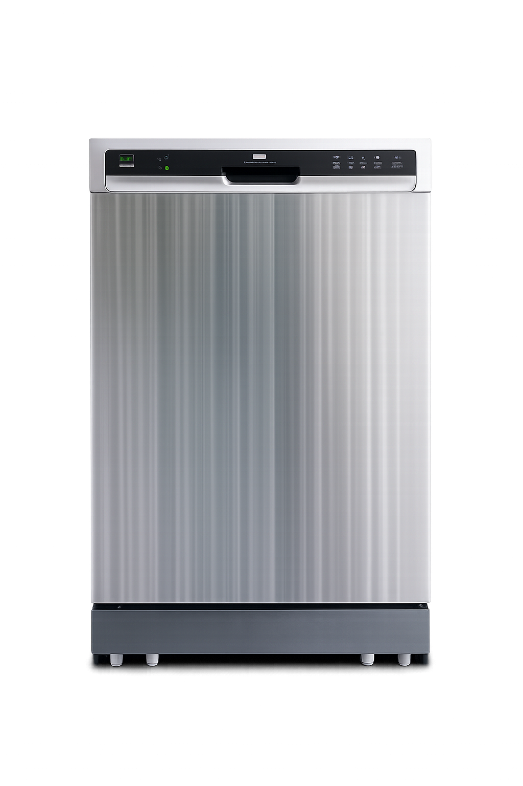

ثلاجات سيلتال
- الثلاجة مش بتبرد كفاية
- صوت عالي من الكمبريسور
- تجمع ثلج زيادة
- مشكلة لوحة التحكم
- شحن فريون سيلتال
متخصصون في صيانة أجهزة سيلتال. قطع غيار أصلية 100% وضمان مكتوب على كل خدمة. اتصل على 16481.

ثلاجات
غسالات ملابس
تكييفات
غسالات أطباق ديب فريزر
ديب فريزر
 بوتاجازات
ديب فريزر
بوتاجازات
بوتاجازات
ديب فريزر
بوتاجازات
إذا واجهتك أي مشكلة في أجهزتك المنزلية، يمكنك حجز صيانة فورية الآن. نصلك خلال 3 ساعات من طلبك.
الدعم الفني المعتمد
نوفر لكم أرقى خدمات الدعم الفني والصيانة المنزلية المعتمدة لجميع أجهزة سيلتال بأحدث التقنيات وقطع الغيار الأصلية.
بمجرد التواصل معنا، نتيح لك أحدث التقنيات والأساليب المتطورة في إصلاح وصيانة أعطال سيلتال في جمهورية مصر العربية. لقد شهدت شركة Siltal تطورات كبيرة في خطوط إنتاج الأجهزة المنزلية، وتعتبر شركتنا من أنجح مراكز صيانة غسالات، ثلاجات، ميكروويف، ديب فريزر، وبوتاجازات سيلتال في مصر.
ضمان أجهزة سيلتال في مصر حقيقي ومعتمد، ويتم تفعيله فوراً بعد إتمام عملية الصيانة. يكون الضمان حسب قطع الغيار المستبدلة وقد يصل إلى سنة على أعمال الصيانة. نعتمد على قطع غيار أصلية مستوردة من بلد المنشأ لشركة Siltal لضمان تفادي حدوث الخلل مرة أخرى.
بمجرد التواصل مع خدمة عملاء صيانة سيلتال في مصر المتاحة على مدار الساعة 24/7، ستجد دعماً كاملاً من فريق ممثلي خدمة العملاء في القاهرة والجيزة والإسكندرية والمحافظات. ويتكون فريقنا من قسم بلاغات صيانة سيلتال، وقسم المتابعة الدورية، وقسم الشكاوى لضمان أعلى مستوى من الخدمة والرضا.
دعم المنتجات من المحاور الأساسية لدينا لتطوير خدمات ما بعد البيع. بمجرد إتمام عملية الإصلاح المنزلية، يترك الفني للعميل شهادة ضمان معتمدة وفاتورة تفصيلية بقطع الغيار المستبدلة التالفة لضمان الشفافية وتفعيل الضمان الفعلي والكامل للمنتج.
يمكن تقديم بلاغ صيانة معتمد بسهولة تامة عن طريق الاتصال بالخط الساخن لصيانة سيلتال في مصر 16481، أو عبر أرقام هواتف الدعم السريع 01068429404، أو من خلال إرسال نموذج بلاغات الأعطال الإلكتروني المتاح في أسفل هذه الصفحة وسنقوم بالتواصل معك لتأكيد الموعد فوراً.
نحقق المعادلة الصعبة للسوق المصري بتوفير أفضل جودة صيانة وخبرة مهندسين مع تكنولوجيا سيلتال الكورية العالمية بأسعار اقتصادية وتنافسية تناسب الجميع. نصلك أينما كنت في القاهرة، الجيزة، القليوبية، البحيرة، الإسكندرية، طنطا، الدقهلية، الشرقية، وجميع محافظات مصر.
الدليل الشامل
إرشادات التشغيل الصحيحة وأبرز الأعطال الشائعة وطرق الوقاية منها المقدمة من توكيل صيانة سيلتال في مصر.
ينصح مركز صيانة ثلاجات سيلتال في مصر بالآتي عند التشغيل لأول مرة:
توجيهات تشغيل الغسالات الأوتوماتيك والـ Top Load وغسالات الأطباق من سيلتال:
تعليمات الاستخدام الآمن لميكروويف سيلتال لتفادي المخاطر والأعطال:
توجيهات توكيل سيلتال لشاشات التلفزيون وبوتاجازات البيلت إن:
نصائح تشغيل الديب فريزر الأفقي والرأسي من سيلتال:
أسئلة شائعة
توكيل سيلتال القاهرة – عنوان توكيل سيلتال الجيزة – رقم صيانة غسالات سيلتال في القاهرة – رقم صيانة ثلاجات سيلتال في الجيزة – رقم فرع توكيل سيلتال امبابة – الوراق - الكيت كات - القومية العربية – ارقام صيانة مجففات سيلتال في الدقي - مركز غسالات سيلتال العجوزة – رقم تليفون سيلتال المقطم – الرقم المختصر لصيانة سيلتال في مدينة نصر – مركز صيانة غسالة اطباق سيلتال في المقطم – البساتين – السيدة زينب - السيدة عائشة – ارقام توكيل سيلتال المعادي – خدمة عملاء سيلتال بالمهندسين – ارقام مراكز اعطال سيلتال في عين شمس – مراكز سيلتال حدائق القبة – توكيل سيلتال سراي القبة – فرع سيلتال في شبرا مصر وشبرا الخيمة – ارقم تليفون شركة سيلتال دار السلام - خدمة صيانة اعطال سيلتال في الهرم – الفرع الرئيسي لشركة سيلتال في فيصل – المريوطية – اللبيني – عمل بلاغ صيانة اعطال سيلتال العياط – ابو النمرس
صيانة ثلاجات وديب فريزر سيلتال في 6 اكتوبر – فرع الشيخ زايد لصيانة ثلاجات سيلتال – اماكن بيع اجهزة سيلتال في الشيراتون – مراكز صيانة غسالات سيلتال في الشروق والعبور والعاشر من رمضان – رقم تليفون خدمات اعطال اجهزة سيلتال في السلام – رقم صيانه سيلتال في المنيب المنيل المرج – اسأل عن اماكن صيانة اجهزة سيلتال في وسط البلد – رقم صيانة سيلتال في التحرير – اماكن صيانة درايير سيلتال القطامية – ورش انتاج اجهزة سيلتال في المنطقة الصناعية – فرع توكيل سيلتال بولاق وارض اللواء – اقرب مركز صيانة غسالات سيلتال في حدائق الهرم واكتوبر – مبيعات سيلتال في مول مصر – معرض سخانات سيلتال في ارض المعارض
موقع سيلتال الرسمي بالعجمي – خدمة عملاء سيلتال بالنخيل – مركز صيانه سيلتال بالبيطاش – توكيل سيلتال بالهانوفيل – مركز خدمة سيلتال المعمورة – تليفون توكيل سيلتال بالشاطبي – الخط الساخن لصيانه سيلتال بالازاريطة – صيانة سيلتال الاسكندرية – رقم صيانه سيلتال بالورديان – الرقم المختصر لصيانه سيلتال بالدخيلة – مراكز صيانه سيلتال المعتمدة بالمندرة – توكيل سيلتال في ميامي – فرع سيلتال بالعصافرة – رقم سيلتال المختصر في لوران – مركز صيانة ديب فريزر سيلتال في كفر عبده – باكوس – تليفونات توكيل سيلتال بالنزهة – رقم سيلتال في محرم بك – شركة سيلتال في الحضرة – رقم مركز صيانه سيلتال بحري – تليفون سيلتال بالانفوشي – فرع سيلتال في المنشية – مركز خدمة سيلتال في جليم – ارقام صيانه سيلتال في سابا باشا – رقم مركز صيانة سيلتال في بلوكلي – رقم خدمة عملاء سيلتال في مصطفي كامل – رقم توكيل سيلتال في ستانلي – رقم توكيل سيلتال في ابو قير – رقم مركز صيانه سيلتال في المنتزة – نمرة تليفون سيلتال سموحة – رقم مركز صيانه سيلتال في سبورتنج – سيلتال في باب شرق
عناوين مراكز صيانة ثلاجات سيلتال في القليوبية – توكيل غسالات سيلتال المنصورة – ارقم خدمة عملاء صيانه سيلتال بالشرقية – توكيل صيانه سيلتال المنوفية – عنوان صيانة غسالات سيلتال في الفيوم - مركز صيانة ثلاجات سيلتال دمياط – الرقم الموحد لصيانة اعطال سيلتال في البحيرة – رقم تليفون صيانه سيلتال كفر الدوار – نمره تليفون صيانه سيلتال في بنها – الدعم الفني المباشر لسيلتال مصر في طنطا – بلاغات اعطال سيلتال البحيرة – وكيل سيلتال طنطا – ارقام فروع صيانه سيلتال الاسماعيلية – صيانة سخانات غاز سيلتال في مدينة السادات – تليفون صيانة ثلاجات سيلتال بورسعيد وبورفؤاد – رقم شركة سيلتال في الوادي الجديد – خدمة اصلاح غسالات سيلتال في الاسكندرية – خدمة صيانة ثلاجات سيلتال الفورية في السويس – الخط الساخن صيّانة مجففات سيلتال الاسكندرية – ارقام هواتف صيانة ميكروويف سيلتال في دمنهور – توكيل سيلتال البحيرة